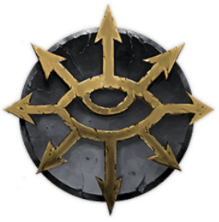

Fall of Cadia
| Fall of Cadia | |
|---|---|
| Part of the Thirteenth Black Crusade | |
 The war for Cadia, as painted for the Ecclesiarchy Artwork © Games Workshop | |
| Date | 999.M41 (the Thirteenth Black Crusade began in the last years of the millennium) |
| Location | Cadia, Cadian system; the Cadian Gate, Segmentum Obscurus |
| Result | Cadia destroyed; the Cadian pylons broken; the Eye of Terror expanded into the Great Rift; the Cadian Gate lost. The Black Crusade then stalled in the surrounding systems |
| Belligerents | |
Imperium Necrons of Trazyn the Infinite Necrons of Trazyn the Infinite | Chaos  Black Legion |
| Commanders and leaders | |
| Trazyn the Infinite | Abaddon the Despoiler |
| † Killed in action | |
| Units involved | |
| Strength | |
| Casualties and losses | |
| Cadia: Nearly all remaining defenders killed c. 3 million evacuated[1] Lord Castellan Creed killed Most of the Titans of Legio Metalica and Legio Ignatum lost | Chaos: Heavy in the ground assaults: c. 1,000,000 killed[c] Volscani Cataphracts largely destroyed Urkanthos killed at Kasr Kraf |
| Cadia broken apart by the Will of Eternity; Urthwart and Saint Josmane's Hope destroyed; the Demios Binary scoured to bare rock; the Cadian pylons broken | |
The Fall of Cadia was the destruction of the fortress world of Cadia in 999.M41, the final act of Abaddon the Despoiler's Thirteenth Black Crusade. For ten thousand years Cadia had stood at the mouth of the only stable route out of the Eye of Terror, the Cadian Gate, and it had held against twelve Black Crusades and many thousands of lesser attacks. It supplied the Imperium with the regiments that set the standard of the Astra Militarum, and its fortifications made it the most heavily defended world in the Segmentum Obscurus. At the end of the 41st millennium it was struck from orbit by a captured Blackstone Fortress and broken apart, and the Eye, no longer restrained, spread across the stars.[2][1]
The loss was the worst in the Imperium's modern history. Imperial scholars rank it among the gravest defeats the Imperium has suffered at the hands of the Archenemy since the Heresy. Its immediate consequences were the evacuation of the Cadian survivors, the end of the Gate as a defensive line, and the opening of the Great Rift, which divided the Imperium and darkened the Astronomican across half the galaxy. The words Cadia stands were chanted by its soldiers in the last days. They have since passed into the speech of the whole Astra Militarum.[2]
Background
[edit]The world
[edit]Cadia was a cold, windswept world of sundered plains and ash-grey mountains, on the edge of the Eye. Imperial records state that about forty years before the Heresy it was home to a primitive human people with violet eyes who worshipped the Ruinous Powers, and that the primarch Lorgar of the Word Bearers came there on his pilgrimage to learn whether the old gods were real. A priestess named Ingethel is said to have led his fleet's scout ship into the Eye. After the pilgrimage Lorgar ordered a bombardment that killed the Cadians and left the world empty. The account depends on Word Bearer testimony and was sealed by the Inquisition until the 41st millennium.[3]
After the first Black Crusade in 781.M31 the Imperium recognised that Cadia was the keystone of the defence of the Segmentum Obscurus. It settled the world with colonists, whose descendants soon showed the violet eyes of the earlier inhabitants. The first settlements were laid out in the broad avenues of Terran cities and proved easy to attack. After the second crusade, in 597.M32, they were rebuilt as Kasrs, fortress-cities whose streets and buildings were planned by siege engineers as fields of fire. Every Cadian child was taught to field-strip a weapon and drilled in tactical doctrine from the age at which other children learned to read.[1]
The pylons
[edit]Scattered over Cadia's surface were black monoliths of unknown age, the Cadian pylons. The Adeptus Mechanicus had studied them for millennia and suspected that they were the reason that the Gate was stable, but it could not make them answer. In the last days of the world, Archmagos Dominus Belisarius Cawl and the Necron lord Trazyn the Infinite established that they were Necron works, built millions of years earlier to shut out the Warp, which the Necrons' masters had feared. The Imperium had been relying on an alien defence for ten thousand years without knowing it.[2]
Prelude
[edit]The Time of Ending
[edit]By the last decade of the 41st millennium the Imperium was beset on every side. Orks multiplied, the Necrons rose from their tomb worlds, the T'au Empire spread on the eastern fringe, and Tyranid hive fleets approached from beyond the galaxy's edge. The Warp was restless. Astropaths received visions of angels and daemons fighting beneath a ghostly firmament, and the choirs of the Segmentum Solar were flooded with cries from every other corner of the galaxy while the Segmentum Pacificus fell silent. Historians call these years the Time of Ending. On the Cadian side, the Thirteenth Black Crusade was already gathering around the Eye.[2][4]
The Plague of Unbelief
[edit]The first signs were space hulks, which dropped out of the Warp in great numbers around the Belis Corona and Agripinaa systems. Boarding parties of the Navy and the Astartes found them full of disease and corruption. At the same time, Navy ship crews began to sicken, and the Navy reported sightings of the plague ship Plagueclaw. The Death Guard lord Typhus, the Herald of Nurgle, brought a fleet from the Eye to the Subiaco Diablo system, and a disease called the Plague of Unbelief spread across a dozen worlds. The dead rose from graves in numbers that the Guard could not contain, and flagellant cults grew on every afflicted world. Several Navy battle groups were paralysed by sickness before the Chaos fleet arrived.[1]
The treachery at Kasr Tyrok
[edit]On Cadia itself the Imperium was gathering an army. Regiments of the Astra Militarum mustered at the fortress world beside Titan Legions and Skitarii. During the muster, the Volscani Cataphracts, a regiment of the Astra Militarum, rose in revolt. They killed thousands of loyal Guardsmen and swarmed aboard the command leviathan Excubitoi Castellum, where they killed the Governor Primus, Marius Porelska, and the senior command of the Cadian Gate. At the darkest moment Colonel Ursarkar E. Creed of the 8th Cadian Regiment, known as the Castellan's Own, took control of the surviving troops and put down the revolt. His soldiers demanded that he lead them. After refusing three times he accepted the office of Lord Castellan, and he held it to the end.[1]
Creed promoted officers he thought capable and dismissed those he did not, and made many enemies among the Cadian officer class. By the opening of 999.M41 the garrison of Cadia and the surrounding systems stood at several hundred regiments, with the Titans of the Legio Metalica and other Legions, regiments of Kasrkin and the Youth Corps, and companies of the Chapters of the Astartes Praeses, the Space Wolves and many others.[1]
The Thirteenth Black Crusade
[edit]The storm breaks
[edit]In early 999.M41 Cadian Kasrkin sent into the outer reaches of the Eye searched the blighted world of Urthwart for the enemy's first move. They found nothing alive. While they prepared to withdraw, the Black Fleet emerged from the Eye with the Planet Killer, a ship that the Navy had believed lost since the Gothic War. It destroyed Urthwart in minutes, with the Kasrkin on it. A fleet of hundreds of ships, with two Blackstone Fortresses, advanced on Cadia. Chaos Space Marines walked on worlds they had not touched for ten thousand years.[1][5]
The Black Legion took the fortress world of Nemesis Tessera in the first phase, perhaps because it was the seat of an Inquisitorial conclave, and the Fortresses scoured the Demios Binary to bare rock. Traitor Volscani regiments took the mining stations of Solar Mariatus. The first inner world of the Cadian system to fall was the prison world of Saint Josmane's Hope, where an uprising had been prepared by a cult front and the freed prisoners proved to be the followers of the Violators, a Slaanesh warband. When the situation could not be recovered, Creed ordered the world destroyed. The Inquisition's ships carrying Exterminatus weapons were weeks away, and Grimnar reported that his fleet had none. The Mechanicus devised a method, which was to overload the generatorium of the prison complex so that its discharge would tear through the crust. A team went to the surface to do it, and the world broke apart.[1]
Kasr Kraf and the arrival of the Saint
[edit]Abaddon's ground assault on Cadia itself fell first on the fortress-city of Kasr Kraf, the principal bastion of the defence, under the command of one of his Chosen, Urkanthos, the Lord Purgator, with a horde of Chaos Space Marines, cultists and daemons. The city was close to falling when Saint Celestine, the Living Saint, arrived and killed Urkanthos in the breach. Kasr Kraf held, and Creed used the time to move the main defence to the Elysion Fields, the largest cluster of pylons on the planet. It had by then become evident that the pylons were the object of the whole campaign.[1]

The pylons awakened
[edit]Cawl had come to Cadia led by a Harlequin Shadowseer, Sylandri Veilwalker. With the knowledge of Trazyn, who had been present when the pylons were first built, he mastered their systems in the catacombs beneath the Elysion Fields. As Abaddon launched his last great assault on the field, Cawl activated the network. The pylons projected a beam of dark light into the Warp, the daemons of the assault faded, and the Eye of Terror began to shrink. For a time Cadia seemed to have been saved.[2]
The fall
[edit]The Blackstone strike
[edit]When the pylons were lit, Abaddon abandoned his wish to defeat the defenders in person. He turned to a plan he had prepared for the case. The Blackstone Fortress Will of Eternity, damaged by an attack from the Imperial Fists' mobile fortress-monastery the Phalanx and by a Space Wolves fleet, was sent down on Cadia from orbit as a kinetic weapon. Reports describe the impact as a gouge hundreds of kilometres across. Mountains turned to dust, seas boiled into steam, and tidal waves and pyroclastic flows swept across the continents. The continent of Cadia Tertius was obliterated, Cadia Primus half drowned, and Cadia Secundus ruined by fire. The Krian Fault, which had threatened the world since the Age of Strife, ruptured. The planet's crust split.[1][2]
The tremors and winds reached the Elysion Fields, half a world away, and toppled the pylons. The beam of dark light flickered and went out, and the Eye began to expand again. Daemons poured from rifts around the wreck of the Blackstone Fortress. As the world died, Creed organised an evacuation that carried about three million of its people off the surface before it came apart. Creed was not among them. He is recorded as missing, and the circumstances are not known.[2]

Orders of battle
[edit]The Departmento Munitorum's reconstruction divides the last defence into five engagements. At Kasr Trunch some 127 regiments of Cadian Shock Troops, 65 of Kasrkin and 12 of the Youth Corps, with five Skitarii legions, a Titan demi-legion, two preceptories of the Order of the Bloody Rose and companies of the Angels of Absolution and the Black Consuls, held the first line. A counterattack by the Black Consuls and Watchguards with an Officio Assassinorum team followed. In the Long Retreat the defenders withdrew under cover of the Legio Ignatum and three preceptories of the Order of the Ebon Chalice. In the high-orbit offensive the Novamarines, Reclaimers, Excoriators, Cerulean Guard and Iron Hands recaptured the orbital batteries of Mos Khazner, which allowed the retreat to proceed. At the Lord Castellan's last stand Creed held the Elysion Fields with 99 Cadian regiments, Penal Legions from Fort Drokz, two Knight households, the Relictors and a host of Harlequin troupes, until the end.[6]
Aftermath
[edit]The Great Rift
[edit]The destruction of the pylons coincided with the opening of the Great Rift. A tear in reality, stretching from the Eye of Terror to the Hadex Anomaly in the east, divided the Imperium into the Imperium Sanctus, which could still see the Astronomican, and the Imperium Nihilus, which could not. The storms in the Warp that followed isolated worlds for years in the period called the Noctis Aeterna. Imperial scholars disagree about the cause. Cadia's fall is the most commonly cited, but the Mechanicus lists a dozen other events of the same period, from the resurrection of the primarch Roboute Guilliman to the fall of the craftworld Biel-Tan, that may have contributed.[2]
The Cadian Gate after Cadia
[edit]The surviving garrison of the Cadian Gate did not break. The worlds of the Cadian, Belis Corona and Agripinaa systems held, many with veterans of the last battles, and the Chaos host fell to quarrelling, since its warlords had expected a victory that would end the war. The Imperial commands exploited each overreach. The Imperium also stripped its eastern fringe garrisons to reinforce the Gate, which weakened the defences against the Tyranid hive fleet Leviathan and allowed the T'au Empire's latest expansion until the Zeist campaign stopped it. The wreck of Cadia was resettled by the Black Legion and has become a stronghold of the Traitors at the centre of a new Chaos realm. The Adeptus Custodes sent a small, fast force to the wreck after the Rift opened. Details of its mission are sealed, even among the Custodes.[2]
The soldiers who escaped Cadia, among them the force known as the Celestinian Crusade, fled by a Webway gate on the ice moon of Klaisus with the aid of the Ynnari. Their allegiance with the Aeldari produced an unlikely alliance that ended with the resurrection of the primarch Roboute Guilliman on Macragge, at the hands of Archmagos Cawl.[2]
Legacy
[edit]The Cadian regiments that remain are scattered across the galaxy. New Cadian Shock Troops are raised on transport ships between war zones, drawn from soldiers of other worlds who can stand the training. The motto Cadia stands has passed into use among the officers and platoons of the service, and holds that the world is not lost while a single Cadian lives. In the view of some regiments, the planet broke before the Guard did. Many Cadian survivors consider the fall a personal failure and fight with a hatred that the Commissariat has had to restrain, and those who were not present resent those who survived, while others hold that the soldiers of other worlds who failed to come to Cadia's aid should not be allowed into Cadian regiments.[2]
Timeline
[edit]| Date | Event | Theatre |
|---|---|---|
| 781.M31[d] | First Black Crusade; the Imperium settles Cadia as the keystone of the Segmentum Obscurus | Cadia |
| 597.M32[e] | Second Black Crusade; Cadian cities are rebuilt as Kasrs | Cadia |
| c. 998.M41[f] | Space hulks carrying the Plague of Unbelief appear around Belis Corona; Typhus brings a Death Guard fleet to the Subiaco Diablo system | Belis Corona |
| c. 998.M41[g] | The Volscani Cataphracts revolt during the muster and kill Governor Primus Marius Porelska | Cadia |
| c. 998.M41[h] | Ursarkar E. Creed puts down the revolt and accepts the office of Lord Castellan | Cadia |
| Early 999.M41 | The Black Fleet, with the Planet Killer, destroys Urthwart and advances on Cadia with two Blackstone Fortresses | Urthwart |
| Early 999.M41 | The Black Legion takes Nemesis Tessera and the Fortresses scour the Demios Binary | Nemesis Tessera |
| Early 999.M41 | The prison world of Saint Josmane's Hope is destroyed by the Mechanicus after its uprising | Saint Josmane's Hope |
| 999.M41 | Abaddon's assault on Kasr Kraf; Saint Celestine kills Urkanthos in the breach and the fortress-city holds | Kasr Kraf |
| 999.M41 | Belisarius Cawl and Trazyn the Infinite activate the Cadian pylons and the Eye of Terror begins to shrink | Elysion Fields |
| 999.M41 | The Blackstone Fortress Will of Eternity is sent down on Cadia as a kinetic weapon; the Krian Fault ruptures and the pylons fall | Cadia |
| 999.M41 | Creed holds the Elysion Fields with 99 regiments; about three million people are evacuated before the world breaks apart | Elysion Fields |
| 999.M41 | The Great Rift opens and divides the Imperium into the Imperium Sanctus and the Imperium Nihilus | Great Rift |
| 999.M41 | The surviving Cadians flee through a Webway gate on Klaisus with the aid of the Ynnari | Klaisus |
See also
[edit]Notes
[edit]- ^ Estimated from the regiments listed in the Imperial order of battle; Imperial records give no total.
- ^ Estimated; Imperial records give no figure.
- ^ Estimated; Imperial records give no figure.
- ^ Approximate; the Administratum list gives this date as approximate.
- ^ Approximate; the Administratum list gives this date as approximate.
- ^ Estimated from the account that the Plague of Unbelief came in the last years before the crusade; no exact year is recorded.
- ^ Estimated from the account that the Plague of Unbelief came in the last years before the crusade; no exact year is recorded.
- ^ Estimated from the account that the Plague of Unbelief came in the last years before the crusade; no exact year is recorded.
References
[edit]- ^ a b c d e f g h i j Hill, Justin D.. Cadia Stands (novel). Black Library, Part 4, Chs. 2-8. Codex: Adeptus Custodes (8th Edition), pg. 33. Games Workshop.
- ^ a b c d e f g h i j k Codex: Astra Militarum (9th Edition), pp. 12, 19. Games Workshop. Warhammer 40,000: Core Book (9th Edition), pg. 19. Games Workshop.
- ^ Warhammer 40,000: Rulebook (8th Edition), pg. 161. Games Workshop. Dembski-Bowden, Aaron. The First Heretic (novel). Black Library.
- ^ The Gathering Storm - Part One - Fall of Cadia (7th Edition), pp. 10, 68-88. Games Workshop. Codex: Chaos Space Marines (6th Edition), pp. 20, 25, 57. Games Workshop.
- ^ Codex: Chaos Space Marines (5th Edition), pg. 46. Games Workshop. Codex: Imperial Guard (5th Edition), pp. 14, 57. Games Workshop.
- ^ Codex: Chaos Space Marines (3rd Edition, Revised Codex), pp. 8, 81. Games Workshop. Codex: Eye of Terror (3rd Edition), pp. 5, 11, 24, 37. Games Workshop.